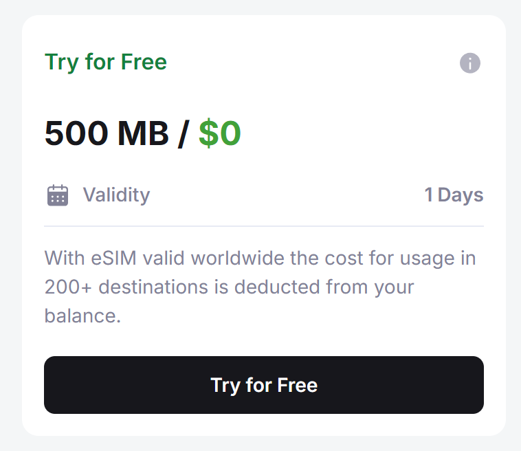
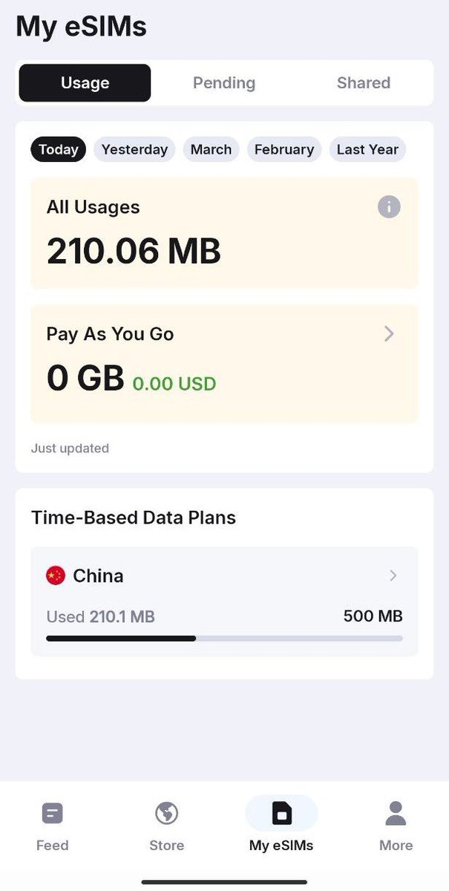

奶昔🥤
@realNyarime
@TseRicardo83256 英国那个CTE啊，流量便宜（就是激活需要搞WiFi通话


奶昔🥤
@realNyarime
要用英国电话卡的WiFi通话怎么办？通常来说，运营商只允许本国的网络访问VoWiFi，因此需要造出🇬🇧网络环境，一种是之前分享的带UDP的VPN代理，另外就是拿英国电话卡漫游开热点，例如 https://t.co/8NPguWQjXP 免费试用（感谢奶昔论坛的yecraft提供）
比如Voxi保号，CTExcel https://t.co/JEMdw1GTYE
睡到自然醒
@TseRicardo83256
@realNyarime 在内地，推荐一款其它国家的卡呗！英国那个咋样？用于app注册或保号用